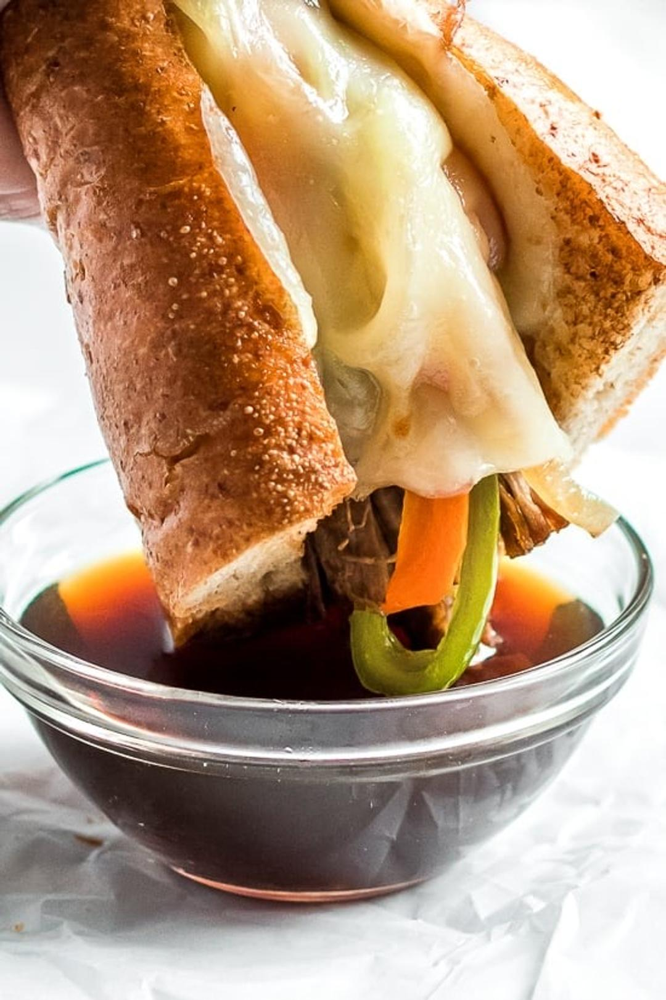

Slow Cooker French Dip Sandwich

Servings: 18 servings
Active Time: 20 minutes
Total Time: 9 hours 20 minutes
Ingredients
- 3 to 4 lb beef round roast (trimmed)
- 1 tbsp minced garlic (minced)
- 1 tbsp fresh rosemary (or 1 tsp dry)
- 1 tbsp fresh thyme (or 1 tsp dry)
- 1 tsp kosher salt
- 1/2 tsp ground black pepper
- 2 to 3 14.5 oz cans Swanson's low-sodium beef broth
- 1 tsp Worcestershire sauce
- 10 whole peppercorns
- 1 bay leaf
- 1/2 large onion (cut into chunks)
- 1/2 tablespoon extra-virgin olive oil
- 3 large onions (thinly sliced)
- 1/2 tsp Kosher salt
- 1 large red bell pepper (cored, seeded and sliced into strips)
- 1 large green bell pepper (cored, seeded and sliced into strips)
- Sargento Reduced Fat Provolone or Mozzarella Slices
- whole wheat baguettes or rolls (cut into 2 oz pieces)
Directions
- 1 In a small bowl mix garlic, rosemary, thyme, salt and pepper. Rub the spice mixture onto all sides of the roast, then place in the slow cooker. Pour the broth into the side of the roast then top with onions. 2 Add the Worcestershire sauce, peppercorns and bay leaf to the broth. 3 Cover and cook on low until the meat flakes apart easily with a fork, about 9 to 12 hours, depending on the size of your roast. 4 An hour before the meat is done, prepare the onions and peppers. 5 In a large nonstick skillet heat the oil over medium heat. 6 Add the onions and salt and cook until golden, stirring often, reducing heat as needed if the onions are burning or browning too quickly, about 30 to 35 minutes. Add 1 tbsp to the pan if it becomes too dry. The onions should turn golden and the flavor should be sweet. 7 Transfer to a serving bowl, then add the peppers to the skillet and cook stirring often until soft, 8 to 10 minutes. 8 Remove the meat from the slow cooker to a cutting board and shred with a fork or slice with a knife. 9 Strain the broth through a fine sieve then place in a gravy separator to remove any fat. Pour 1/4 cup broth into each small ramekin. 10 Preheat the oven to broil. Split the bread open and top with 2 ounces of beef. Top with onions, peppers and cheese and broil until the cheese melts. Place on a plate with broth for dipping.